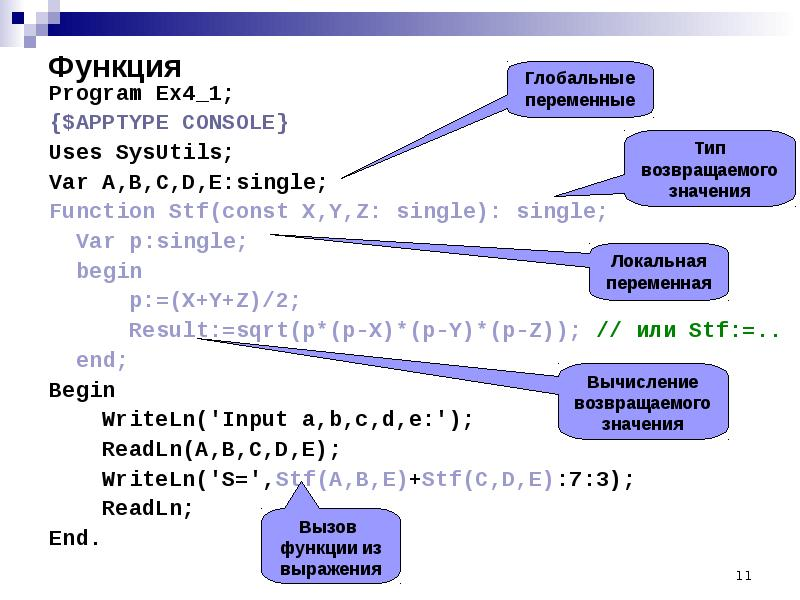

Подпрограмма — это фрагмент кода, который
имеет свое имя и создается в случае необходимости выполнять этот
код несколько (много) раз. Подпрограмма описывается единожды
перед началом основной программы (до begin).
Компилятор пропускает данный фрагмент кода, пока в основной
программе не встретит «вызов» подпрограммы, который выглядит как
обращение к ней по имени (возможно, имени с аргументами,
указанными в скобках).
Во многих языках программирования подпрограммы существуют только в виде функций. Однако в Паскале подпрограмма — и функция и процедура. Разница между ними станет очевидна в данном уроке.
Итак, рассмотрим синтаксис объявления и описания процедуры в Паскале
Пример: Процедура без параметров, которая печатает 60 звездочек, каждую с новой строки
В данном примере работы с процедурой в Паскале очевидно, что
компилятор пропустит блок описания процедуры и дойдет до
основной программы (9 строка кода). И только после того, как
встретится вызов процедуры (10 строка), компилятор перейдет к ее
выполнению, вернувшись к строке 1.
ПРОЦЕДУРЫ С ПАРАМЕТРАМИ. ФАКТИЧЕСКИЕ И ФОРМАЛЬНЫЕ ПАРАМЕТРЫ
Рассмотрим пример необходимости использования процедуры.
Построить фигуру
Особенность: Три похожие фигуры.
Алгоритм решения:
- выделить одинаковые или похожие действия (три фигуры);
- найти в них общее (размеры, форма, угол поворота) и отличия (координаты, цвет);
- отличия записать в виде неизвестных переменных, они будут параметрами процедуры.
Решение на паскале:
Процедура: описание.
Решение: использование
Программа:
Рассмотрим синтаксис объявления и описания процедуры с параметрами в Паскале.
Параметры процедуры (в некоторых языках они называются аргументами) указываются в скобках после ее имени (в объявлении).
В данном примере в качестве введенного символа будем использовать параметр процедуры. Формальный параметр процедуры указывается в скобках при ее описании. Обязательно необходимо указать тип формального параметра через двоеточие.
Фактический параметр — это то значение, которое указывается в скобках при вызове процедуры. Фактическим параметром может быть конкретное значение (литерал: число, символ, строка…) либо переменная, которые компилятор подставит вместо формального параметра. Поэтому тип данных у формального и фактического параметра процедуры должен быть одинаковым.
В данном примере при вызове процедуры компилятор заменит формальный параметр
a фактическим
параметром s,
т.е. тем символом, который будет введен с клавиатуры. Оба
параметра имеют тип данных char.- число фактических параметров должно быть равно числу формальных параметров;
- соответствующие фактические и формальные параметры должны совпадать по порядку следования и по типу данных.
ПРОЦЕДУРЫ С
ПАРАМЕТРАМИ. ПАРАМЕТР-ПЕРЕМЕННАЯ
(ПЕРЕДАЧА ПАРАМЕТРА ПО ССЫЛКЕ)
В
примере формальные
параметры a и b служат
для помещения в них сравниваемых чисел, а
параметр-переменная max —
для сохранения в ней максимального из двух чисел. Параметр-переменная или выходной
параметр передает свое значение в
основную программу (фактическому параметру m),
т.е. возвращает значение, тогда как формальные параметры-значения (входной
параметр), наоборот, принимают значения из основной
программы (из фактических параметров x и y).
Для параметра-переменной (max)
используются те ячейки памяти, которые отведены под
соответствующий параметр при вызове процедуры (ячейка m).
Таким образом, сформулируем понятия:
Если в качестве формального параметра указана обычная
переменная с указанием ее типа, то такой параметр есть параметр-значение или входной
параметр (a и b в
примере). Тип данных формального параметра-значения должен
соответствовать типу данных его фактического параметра (a и b должны
попарно соответствовать типу данных x и y).
Если перед именем формального параметра в объявлении
процедуры стоит служебное слово var,
то такой параметр называется параметром-переменной или выходным параметром
(max в
примере). Для него используются те ячейки памяти, которые
отведены под соответствующий параметр при вызове процедуры (m).
А передача такого параметра называется передачей
по ссылке (ссылка на ту же ячейку в
памяти). Фактический параметр, соответствующий
параметру-переменной, может быть только переменной (не
константой, не литералом и не выражением).
Использование параметров-переменных позволяет тратить меньше памяти
ПЕРЕДАЧА АРГУМЕНТОВ ПО ЗНАЧЕНИЮ И ПО ССЫЛКЕ
-
Рассмотрим более подробно два этих понятия:
-
Передача по значению: Значение фактического
параметра копируется в соответствующий формальный параметр.
Изменение формального параметра не ведет к изменению
фактического параметра
- Передача по ссылке: Оба параметра и формальный и фактический ссылаются на одно и то же расположение в памяти, поэтому все изменения в теле процедуры отражаются и на фактическом параметре.
-
Изменение формального параметра изменяет и фактический
параметр тоже:
Функция в программировании, или подпрограмма
Функция в программировании, или подпрограмма — фрагмент программного кода, к которому можно обратиться из другого места программы. В большинстве случаев с функцией связывается идентификатор], но многие языки допускают и безымянные функции. С именем функции неразрывно связан адрес первой инструкции (оператора), входящей в функцию, которой передаётся управление при обращении к функции. После выполнения функции управление возвращается обратно в адрес возврата — точку программы, где данная функция была вызвана.

Функция может принимать параметры и должна возвращать некоторое значение, возможно пустое. Функции, которые возвращают пустое значение, часто называют процедурами. В некоторых языках программирования объявления функций и процедур имеют различный синтаксис, в частности, могут использоваться различные ключевые слова.

Функция должна быть соответствующим образом объявлена и определена. Объявление функции, кроме имени, содержит список имён и типов передаваемых параметров (или: аргументов), а также, тип возвращаемого функцией значения. Определение функции содержит исполняемый код функции. В одних языках программирования объявление функции непосредственно предваряет определение функции, в то время как в ряде других языков необходимо сначала объявить функцию, а уже потом привести её определение.
В объектно-ориентированном программировании функции, объявления которых являются неотъемлемой частью определения класса, называются методами. Также в языках с ООП возможно объявление абстрактной (виртуальной) функции без объявления тела функции.
Для того, чтобы использовать ранее определённую функцию, необходимо в требуемом месте программного кода указать имя функции и перечислить передаваемые в функцию параметры. Параметры, которые передаются функции, могут передаваться как по значению, так и по ссылке: для переменной, переданной по значению создаётся локальная копия и любые изменения, которые происходят в теле функции с переданной переменной, на самом деле, происходят с локальной копией и никак не сказываются на самой переменной, в то время как изменения, которые происходят в теле функции с переменной, переданной по ссылке, происходят с самой переданной переменной.
Функция определяет собственную (локальную) область видимости, куда входят входные параметры, а также те переменные, которые объявляются непосредственно в теле самой функции.
Существует возможность вызвать функцию внутри самой функции: такой вызов функции называется рекурсивным, а сам процесс последовательных вложенных друг в друга вызовов функций называют рекурсией. Поскольку необходимо запомнить (в стеке) адрес возврата функции (а также, выделить в том же стеке память под параметры и локальные переменные, не являющиеся динамическими), то ничем не ограниченная рекурсия приводит к переполнению стека, поэтому в языках программирования устанавливается некоторый предельный уровень вложенности рекурсивных вызовов.